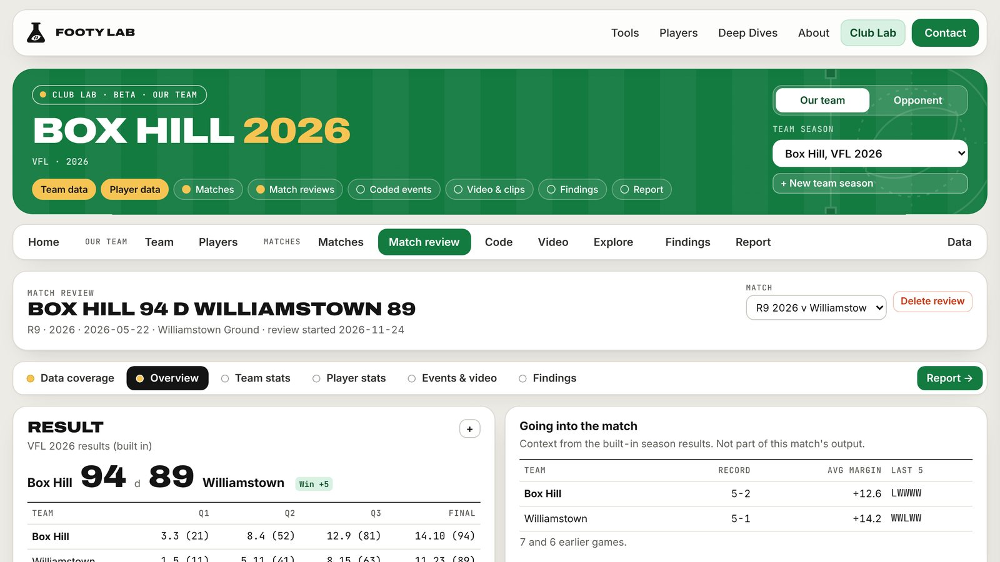
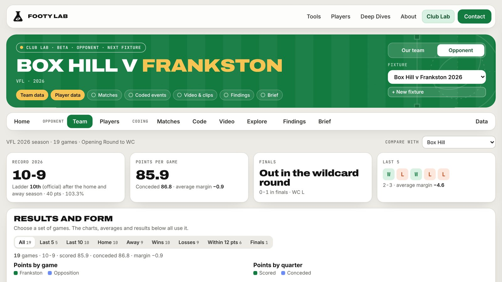
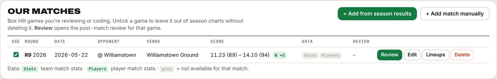
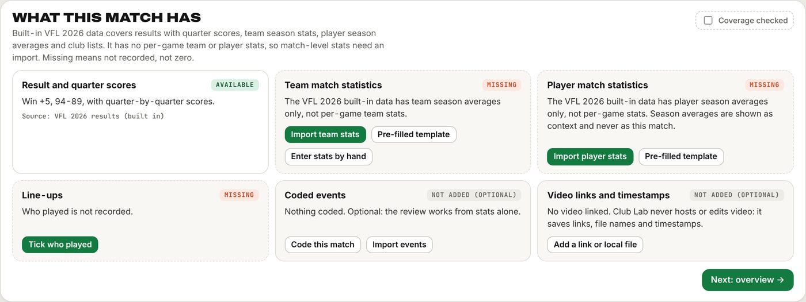
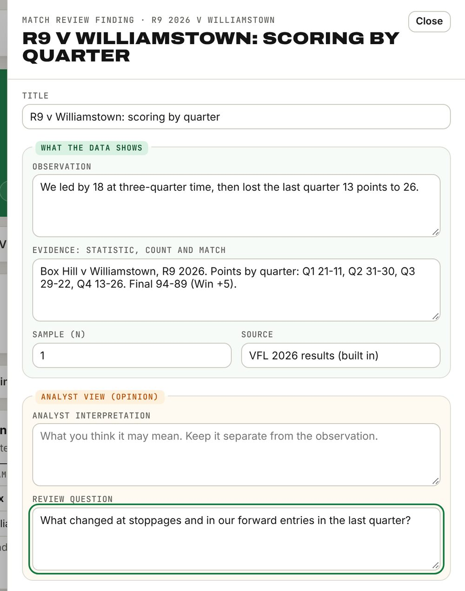
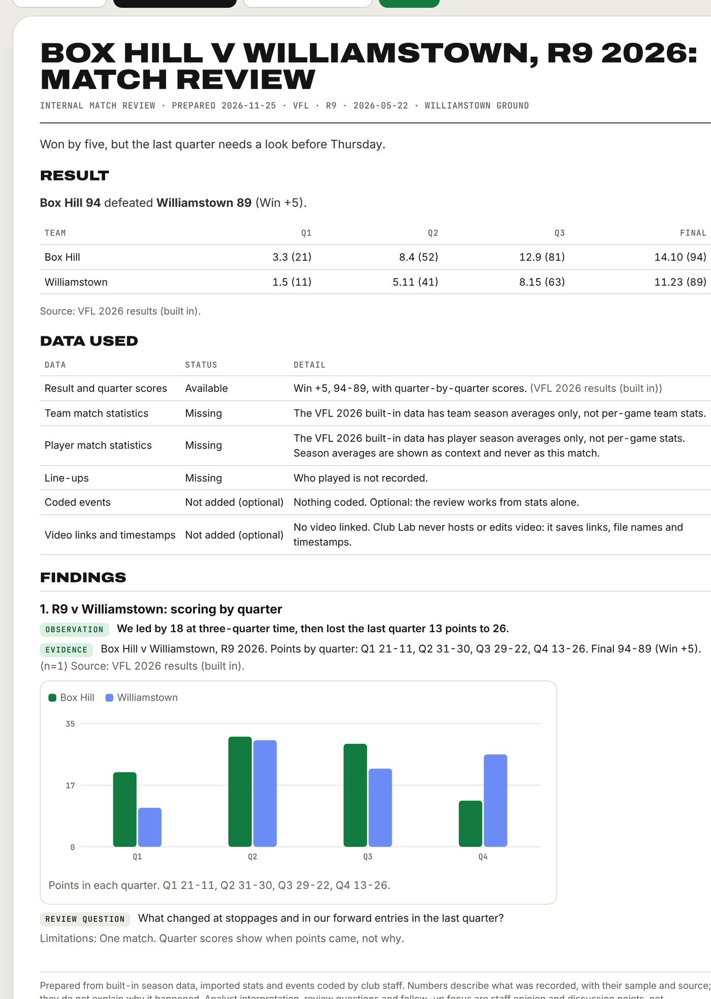

How Club Lab works
Club Lab is a free match analysis workspace for AFL and VFL club staff. Review your own games with the evidence in front of you, scout next week's opponent, and hand coaches a short report. All in one place, all in your browser.

Two modes, one workspace
Switch between them at the top of Club Lab. Matches, players, coding and clips are shared, so a game you code once serves both the review and the next scouting job.
Our team
Your club across a season.
- Team and player season numbers with league ranks
- A review for each completed match: result, quarters, team and player match stats
- Findings and follow-ups for training or the next game
Opponent
The club you play next.
- Form, results, team stats and ratings
- Every player's numbers and Footy Lab WAR
- Analyse any of their games, code and clip it
- Findings sit with your own and go in the same report

How a match review works
Four steps from the final siren to a report. The screenshots are Box Hill's round 9 win over Williamstown, using the built-in VFL 2026 results.
Pick the match
Set up your team and season, then add games from the built-in 2026 results or enter one by hand. Each game gets a Review button.
- Only completed games can be reviewed
- The Data column shows which stats each game has

Check your data
Before any charts, Club Lab shows what this match has: the result, team stats, player stats, line-ups, coded events and video. Each is marked available, missing or optional.
- Missing means not recorded, never zero
- Each gap has a next step: import, enter by hand or code it

Turn a number into a note
Spot something worth raising? Press + next to it. Club Lab opens a finding with the stat, the match and the source already filled in. You add the rest in your own words.
- Observation: one plain sentence on what happened
- Interpretation: your read on why, kept apart as opinion
- Review question: what to check on the vision
- Follow-up: what to work on, who owns it and when

Share the report
Pick the findings for coaches, put them in order and add a short summary. Club Lab builds the report with the result, the data used and each finding with its chart.
- Print it or save it as a PDF
- Download it as Markdown
- Present it on the big screen, one finding per slide

What's built in
2026 season data, so much of the work is done before you start. Missing data is shown as missing, never as zero. VFL per-game stats are from AFLM Stats.
| AFL 2026 | VFL 2026 | |
|---|---|---|
| Results and quarter scores | Built in | Built in |
| Team match stats | Built in (summed from player stats) | Built in (8 stats) |
| Player match stats | Built in | Built in (8 stats plus fantasy points) |
| Season stats, lists and Footy Lab WAR | Built in | Built in |
| Coded events and video | Yours: code in Club Lab with the templates, or import a spreadsheet | |
Your data stays with you
No account, no server, no upload.
In your browser
Reviews, findings, stats and coding are saved on your own computer.
Video stays put
Club Lab stores links, file names and timestamps. Your vision is never uploaded.
Backed up by you
Download one backup file and restore it on another computer.
It's a beta
- No club has used it across a full season yet. Feedback shapes what comes next.
- VFL match stats cover 8 core stats. Import your own for anything more.
- Built and tested in Chrome.
Using it at your club?
Tell me what works and what's missing.